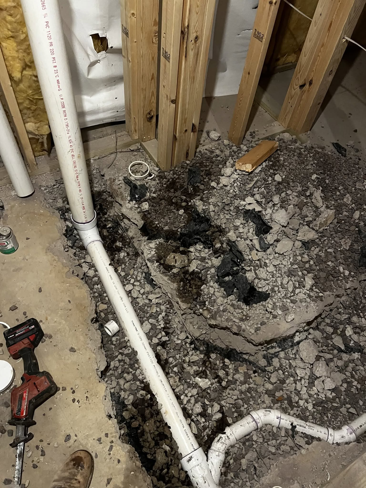
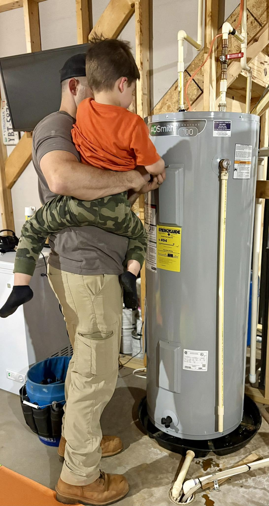
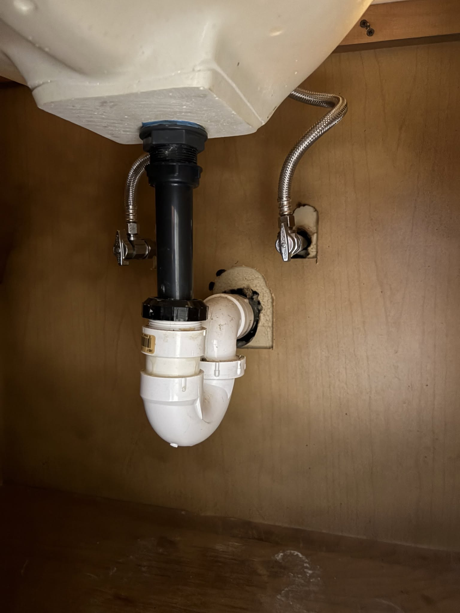
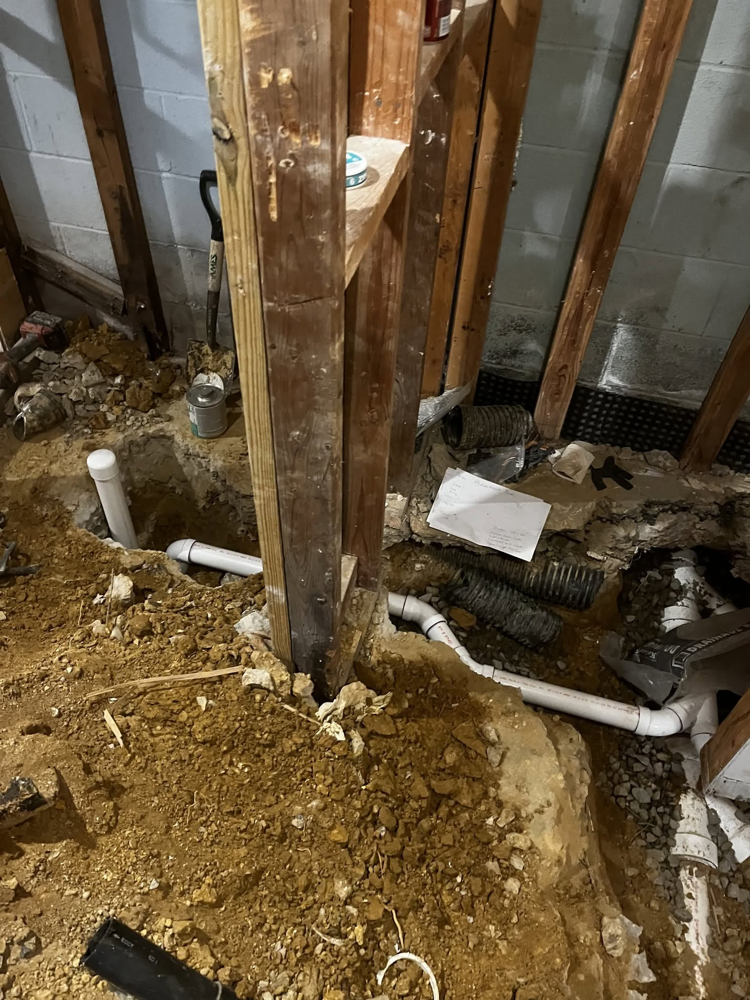
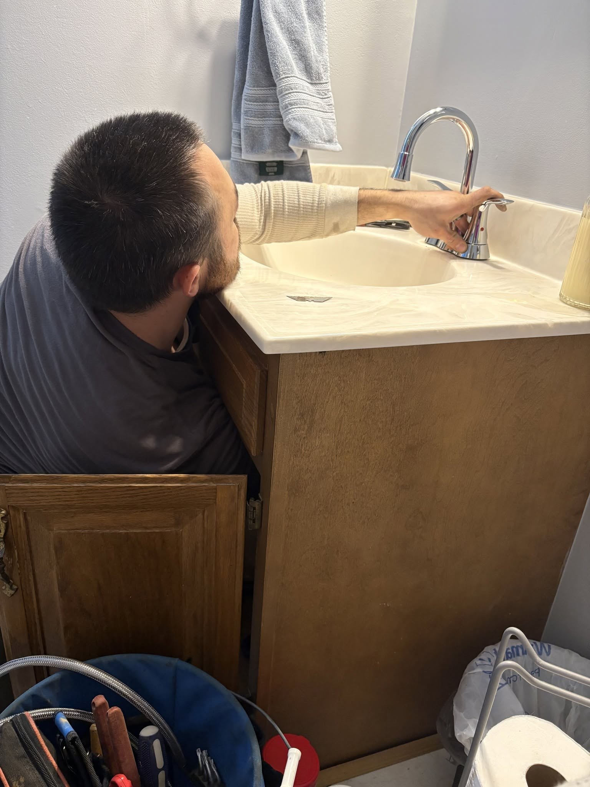
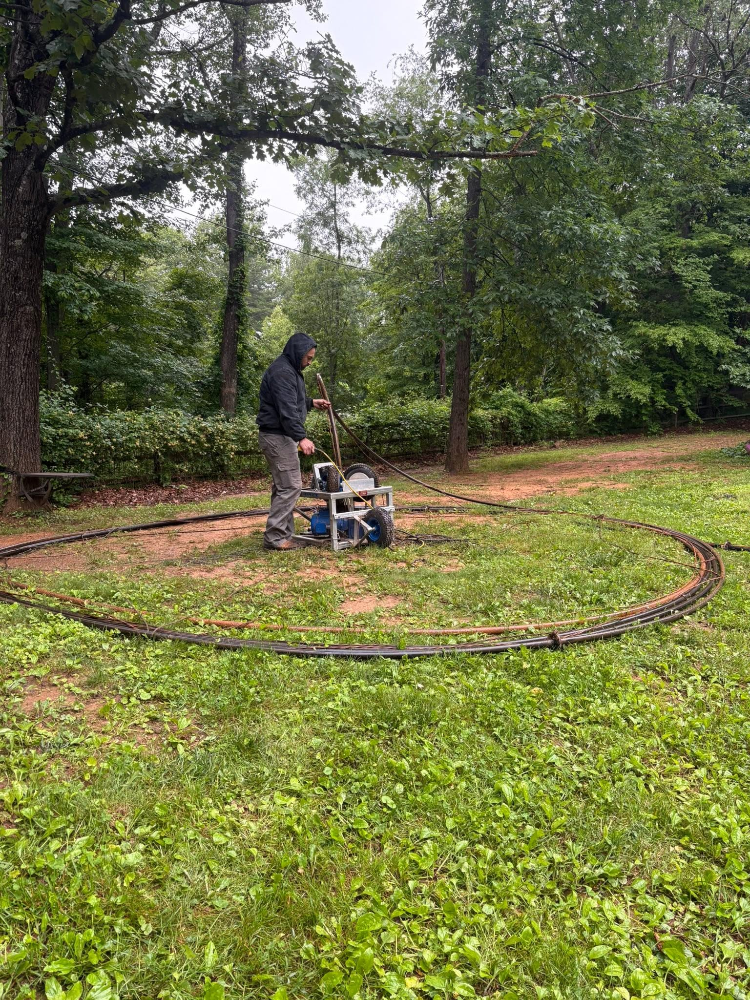
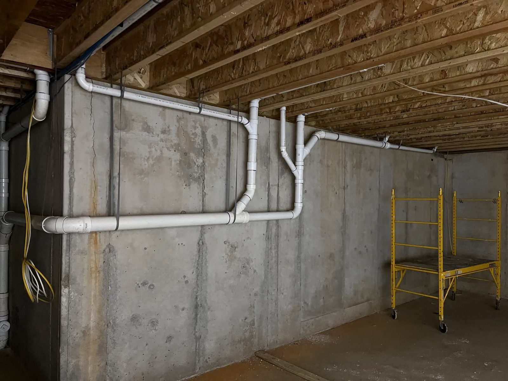

Residential Plumbing, Done Right
Service, installation, and repair for every part of your home's plumbing — backed by fast estimates and straight answers.
24/7 Emergency Plumbing
When water is where it shouldn't be, every minute counts. We answer emergency calls around the clock and talk you through the first steps — like shutting off your main valve — while we're on the way.
- ✓Burst or frozen pipes
- ✓Major leaks and flooding
- ✓Sewer backups
- ✓No water or no hot water
- ✓Failed sump pumps during storms
- ✓Well pump failures — no water to the house


Water Heater Repair & Replacement
No hot water is more than an inconvenience. Water heaters develop problems from sediment buildup and internal corrosion over time — we'll diagnose honestly and tell you whether a repair will hold or replacement is the smarter spend.
- ✓Repairs: elements, thermostats, valves & more
- ✓Tank water heater replacement
- ✓Tankless (on-demand) systems
- ✓Leaking unit assessment & safe removal
- ✓Maintenance flushes to extend service life
Drain Cleaning
Slow or clogged drains are usually debris, grease, and buildup collecting where you can't see it. We clear the blockage properly — not just poke a hole in it — so water flows the way it should and stays that way.
- ✓Kitchen & bathroom sink drains
- ✓Tub & shower drains
- ✓Toilet clogs & main line stoppages
- ✓Recurring-clog diagnosis


Leak Detection & Repair
A hidden leak wastes water and quietly damages your home. Higher water bills, musty smells, or spots on walls and ceilings are all warning signs. We track leaks to their source and repair them efficiently and effectively.
- ✓Supply & drain line leaks
- ✓Fixture & connection leaks
- ✓Water heater & appliance line leaks
- ✓Honest repair-vs-replace guidance
Toilet & Fixture Repair
A running toilet can waste hundreds of gallons a day, and a faulty flush or slow leak only gets worse. We repair the full range of toilet and fixture problems — and when a fixture is past saving, we'll install a quality replacement.
- ✓Running & constantly refilling toilets
- ✓Leaking toilets & faulty flush mechanisms
- ✓Dripping faucets & worn valves
- ✓Sink, tub & shower fixture repair or upgrade


Well, Sump, Sewage & Septic Pumps
A pump only matters on the worst day — and that's exactly when a tired one gives out. Whether it's the well pump your whole house depends on or the sump pump keeping your basement dry, we repair and replace them so a storm or a dry tap never catches you off guard.
- ✓Well pump repair & replacement
- ✓Sump pump repair & replacement
- ✓Sewage ejector pumps
- ✓Septic pump service
- ✓Pre-storm-season checkups
Installations & Upgrades
Remodeling a bathroom, upgrading the kitchen, or adding an appliance? We handle the plumbing side from rough-in to finish — installed clean, to code, and built to last.
- ✓Faucets, sinks, toilets & showers
- ✓Dishwasher, ice maker & washer hookups
- ✓Bathroom & kitchen remodel plumbing
- ✓Fixture upgrades that cut your water bill

Not Sure What You Need? Just Ask.
Describe the problem and we'll give you an honest read and a fast estimate — no pressure, no upsell.